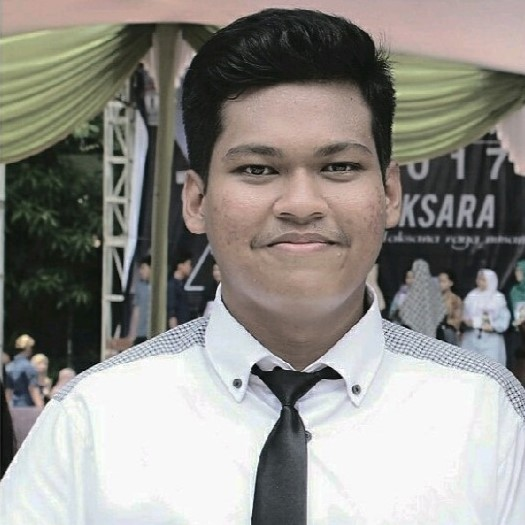

Bagas Wara

Summary
I am Bagas Wara Surya Kusuma, a graduate in Computer Science from Telkom University.
Throughout my studies, I developed a keen interest in web and application development, leading me to undertake projects related to Front End development and UI/UX Design.
Education
- Bachelor of Computer Science - Telkom University (2019-2023)
Work Experience
- Web UI Designer - Software Engineering Expertise Group Telkom University
Jun 2022 - Aug 2022
- Assisting in creating a website design for the Software Engineering Expertise Group
Skills
Awards and Certifications
- Designing a Low Fidelity Prototype in Figma - Coursera Project Network(Jan 2022)
- Car Transport App in Figma - Coursera Project Network (Jan 2022)
Other
Contact Me